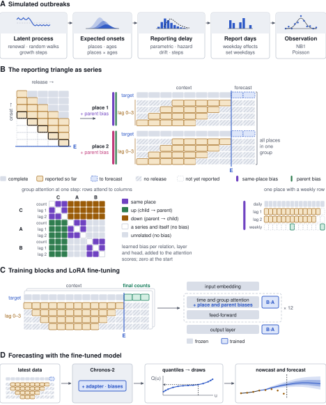
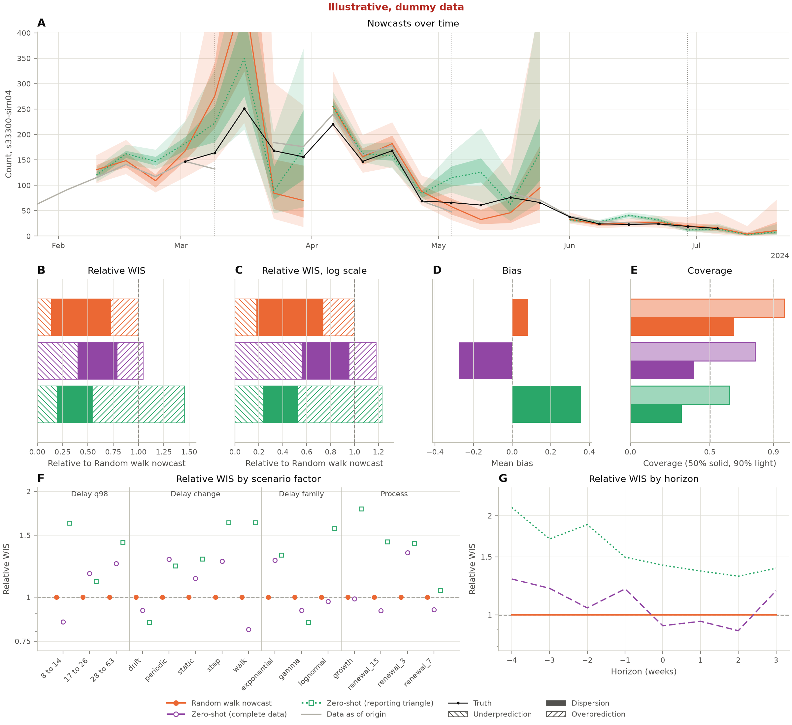
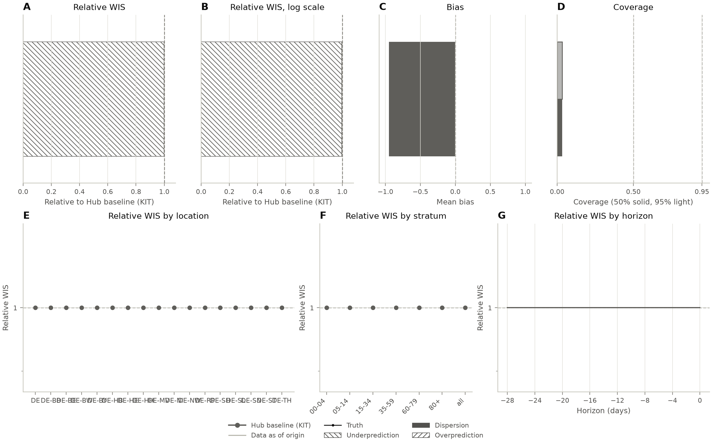

Fine-tuning a time series foundation model on synthetic outbreaks for nowcasting and forecasting
Infectious disease forecasts and nowcasts inform public health. Time series foundation models, neural networks trained on many series, forecast new series well with no further training (zero-shot) but are not designed for reporting delays. Nowcasting methods correct for these delays but either forecast poorly or need expert configuration. We fine-tuned the foundation model Chronos-2 on simulated surveillance data. We simulated these data by combining the reporting model of epinowcast, a widely used nowcasting package, with the renewal model library PyRenew. We gave Chronos-2 counts by event date and reporting delay, one series per place and delay, with attention biases linking series to places and places to regions. We compared it with zero-shot Chronos-2, given the same input or only the latest counts, and with a recently developed baseline nowcasting method, extended to forecast and to sparse data. We evaluated them on held-out simulations, retrospectively against the German COVID-19 nowcast hub, and retrospectively and prospectively in the Democratic Republic of the Congo Ebola forecasting hub. To the Ebola hub we also submitted renewal models built on this combination, from our real-time modelling. On held-out simulations, the fine-tuned model [outperformed / matched] zero-shot Chronos-2 and the baseline method. Removing the attention biases [worsened / did not change] its scores, and giving it the baseline method’s nowcast as input [improved / worsened] them. On the German hub, it [outperformed / performed comparably to] the hub’s models. On the Ebola hub, it [outperformed / performed comparably to] other teams’ models and our renewal models. Fine-tuning on simulations from mature nowcasting tools fused their domain knowledge with a foundation model’s forecasting performance. Fine-tuned foundation models could serve as baselines for modellers and forecasting hubs. Teams without capacity for expert setup could also use them directly, being more flexible and reliable than unadapted baseline methods.
Introduction
- The gap.
- Infectious disease forecasting is being increasingly used to provide situational awareness for public health.
- Both in infectious disease forecasting, and more widely, modern machine learning methods including neural networks are becoming increasingly popular. In particular, foundation time series models which are neaural networks trained on many time series have been shown to outperform traditional methods in many settings. However, these methods are not generally specifically designed to deal with, or to make use of, the biases and delays common to infectious disease surveillance data.
- Nowcasting models have become increasingly popular as a method to make use of these reporting delays in order to improve forecasts of what will eventually be reported.
- Generally, these methods are either relatively simple (Höhle and Heiden 2014; Johnson et al. 2025), complex and customised for a given setting (epinowcast?; Wolkfram2023?), or are developed in ad-hoc fashion for a given target (InsightNet-US 2026).
- If these methods have forecasting support it is generally relatively limited or difficult to make performant without expert knowledge of the target and the reporting system.
- Methods that fused the frontier forecasting performance of foundation time-series models with the nowcasting performance of domain-specific methods without requiring specialisit knowledge to configure could improve infectious disease forecasts and more generally provide a case study for incorporating domain knowledge into foundation models.
- Key references: (Höhle and Heiden 2014; Johnson et al. 2025; Reich et al. 2022).
- Context. Foundation time series models and their use in infectious disease forecasting.
- Time series foundation models forecast new series with no training on them.
- They are typically developed using complex, high parameter neural networks, trained on many time series, and are able to learn general patterns in time series data.
- Recent examples include Chronos-2 (Ansari et al. 2025), TimesFM (Das, Kong, et al. 2024) and Moirai (Woo et al. 2024) which have all been shown to perform well on a wide range of forecasting tasks.
- They are now used widely in operational forecast hubs, for influenza, COVID-19 and RSV, mostly without modification (zero-shot) (CDC 2026; placeholder?; European Respiratory Diseases Forecasting Hub 2026; Ansari et al. 2025; Das, Kong, et al. 2024; Woo et al. 2024).
- Most of the currently used foundation models come with tools that allow them to be fine-tuned on new data.
- This is a process where the weights of the model are modified to better fit the new data, usually using Low-Rank Adaptation (LoRA) or similar methods, which allow the model to be adapted to new data without requiring full retraining.
- Some recent infectious disease forecasting models fine-tune a foundation model on real surveillance data (Hauser 2026; fluxengine 2026).
- Several existing methods incorporate domain knowledge using simulated data but all of these approach custom neural network architectures (Dudley et al. 2026; UMass 2026).
- Outside of infectious disease forecasting fine tuning using domain-specific synthetic data has been shown to improve performance in other domains, including weather forecasting (Dooley et al. 2023) and financial time series (Müller et al. 2022).
- As well as fine tuning, foundation time series models can be adapted with small changes to their architecture. One such change adds learned biases to the attention scores, so the model knows which series are related, such as a count and its reporting delays, or a place and the region that contains it (Woo et al. 2024; Yang et al. 2022).
- Key references: (McGough et al. 2020; Günther et al. 2021; Wolffram et al. 2023; Ansari et al. 2024; Das, Kong, et al. 2024; Woo et al. 2024; Rasul et al. 2023; Garza, Challu, and Mergenthaler-Canseco 2023; Aksu et al. 2024; Shchur et al. 2025; Kalahasti et al. 2026; Dudley et al. 2025).
- Context 2 Nowcasting methods and avilable models
- Nowcasting methods estimate what will eventually be reported for recent dates, using the reporting triangle of counts by reference date and reporting delay (Höhle and Heiden 2014; Wolffram et al. 2023).
- To use simulated data for fine-tuning, we need a method that can also act as a generative model of how outbreaks are reported.
- Chain ladder methods scale up partial counts by the share historically reported at each delay (Johnson et al. 2025). They are fast and transparent, but have no model of incidence, so they cannot simulate new outbreaks.
- Regression methods fit the reporting triangle as a smooth surface over reference date and delay (Kassteele, Eilers, and Wallinga 2019; Schneble et al. 2021; Bastos et al. 2019; Mellor et al. 2025). They describe the observed data well but do not constrain the delay distribution or include mechanisms such as transmission, so they give no clear process to simulate from.
- Conditional generative models first model total counts and then split them across delays (Höhle and Heiden 2014; Stoner and Economou 2020; Stoner, Halliday, and Economou 2023; Seaman et al. 2022). This separates variability in incidence from variability in reporting. However, there is no general software framework for them, and they have not been extended to the wide range of reporting patterns seen in practice, such as changing delays, report-day effects and mixed reporting cadences.
- Marginal generative models specify expected counts by reference date and spread them across delays, treating each cell of the reporting triangle as a separate draw (McGough et al. 2020; Günther et al. 2021; Lison et al. 2024; Abbott et al. 2026). Run forward, they simulate how outbreaks are reported, and can include a renewal process, parametric and time-varying delays, report-day effects and pooling across places and age groups (Lison et al. 2024; Abbott et al. 2026; Bergström et al. 2022).
- epinowcast is a community-developed software framework for marginal generative nowcasting models (Abbott et al. 2026). It is flexible, and supports a wide range of reporting patterns, including changing delays, report-day effects, hierarchical pooling, missing reference dates and user-defined reporting schedules. It has been used in a wide range of applications, including nowcasting COVID-19 hospitalisations in the German nowcast hub (Wolffram et al. 2023), and as a check in nowcasts of mpox and norovirus in England (Overton et al. 2023; Mellor et al. 2025). The same form of model has been used to nowcast the effective reproduction number from line list data (Lison et al. 2024). This makes it a natural basis for simulating training data, and our simulations follow its structure.
- PyRenew is a Python framework, developed and used at the US CDC, for building renewal models of infectious disease from modular components, such as infection processes, delays and observation models, using JAX and NumPyro (CDC Center for Forecasting and Outbreak Analytics 2025; Phan, Pradhan, and Jankowiak 2019). It was developed to fit models similar to those in EpiNow2 and to the generative process in epinowcast to multiple data streams across many locations (Abbott et al. 2020, 2026). However, it has no marginal nowcasting model, and does not have delays that change over time or Dirichlet-multinomial reporting noise.
- What we did.
- We fine-tuned Chronos-2, a general time series foundation model, on infectious disease surveillance data simulated using the epinowcast nowcasting framework.
- epinowcast is written in R and Stan (R Core Team 2025; Carpenter et al. 2017), while Chronos-2 is written in Python. We ported the epinowcast model to Python on top of PyRenew, reusing its components and adding components where it had none, such as delays that change over time.
- We validated the port by submitting renewal models built on it to the Ebola forecasting hub in real time (InsightNet-US 2026). One of these used the posterior reproduction number estimates of BVDOutbreakSize, our model of the outbreak’s size, to inform its own (Abbott, Funk, and Holt 2026) (Supporting Information, Renewal model).
- We gave the model the reporting triangle as one series per place and reporting delay. We added learned attention biases so it can tell which delay series belong to which place, and which places sit within which regions.
- We developed the settings for the simulated data based on our past experience of infectious disease modelling including in the COVID-19 pandmeic (Wolffram et al. 2023), the 2023 Mpox outbreak (Overton et al. 2023), and based on the early data available for the 2025 Ebola outbreak in the Democratic Republic of the Congo (InsightNet-US 2026).
- We adapted a recently developed baseline nowcasting method, baselinenowcast, to also produce forecasts as a baseline for comparison, and to work on sparse data (Johnson et al. 2025) (Supporting Information, Baselines). We also submitted it to the Ebola forecasting hub in real time.
- We first evaluated these models on held-out simulations.
- To assess real world performance we compared our method’s retrospective nowcasts to those from models from the German COVID-19 hospitalisation nowcast hub and initially retrospective and then prospective nowcasts and forecasts to those from models from the Ebola forecasting hub.
- We explored a range of sensitivity analyses to assess the impact of different design choices on model performance.
- These included: assessing the impact of using a baseline nowcast as input to the foundation model, fine-tuning on real data, removing the attention biases and lag series, and comparing different lag count rules and block structures.
- We aim to demonstrate the potential of foundation time series models fine-tuned on domain-specific synthetic data to improve infectious disease nowcasting and forecasting, and to provide a case study for incorporating domain knowledge into foundation models more generally.
- Key references: (Ansari et al. 2025; Johnson et al. 2025).
Methods
Foundation model
- Time series foundation models forecast new series with no training on them (Ansari et al. 2024; Das, Kong, et al. 2024; Woo et al. 2024).
- Chronos-2 is an encoder-only transformer, based on the T5 encoder, with 120 million parameters (Ansari et al. 2025; Raffel et al. 2020; Vaswani et al. 2017).
- It scales each series by the mean and standard deviation of its history and applies the inverse hyperbolic sine. It then splits the series into patches of consecutive steps, which are the units that the model processes (Ansari et al. 2025).
- It has attention layers that update what the model has learned about each patch as a weighted mix of other patches, giving more weight to patches that it finds relevant (Vaswani et al. 2017).
- Time attention mixes patches along one series across time, using the series’ own past to forecast its future (Ansari et al. 2025).
- Group attention mixes the series of a group, using what the other series in its group are doing at the same time step to inform its forecast (Ansari et al. 2025).
- A group can be a set of related series. These can be series the model is forecasting, and series whose future values are already known and given to the model (for example, known future covariates) (Ansari et al. 2025).
- Chronos-2 outputs 21 quantiles, from 1% to 99%, for several future steps in one pass (Ansari et al. 2025).
- In our analysis, where we need trajectories, we interpolate these quantiles and draw samples (Figure 1D).
- Chronos-2 was pretrained on real series from the Chronos and GIFT-Eval corpora and on synthetic series, and learned to use related series and known inputs from synthetic data alone, from generators that impose dependencies between series (Ansari et al. 2025, 2024).
- We used Chronos-2 because its group attention mechanism lets it forecast related series together and take known future inputs, both of which we need (Model inputs).
- We ran it with PyTorch and chronos-forecasting (Amazon Science 2025).
- Key references: (Ansari et al. 2025, 2024; Vaswani et al. 2017).
Model inputs
- Surveillance data for nowcasting are a reporting triangle, counts by reference date, such as the date of symptom onset, and by reporting delay, in which recent dates have only their shortest delays reported so far (Höhle and Heiden 2014; Wolffram et al. 2023).
- We gave Chronos-2 one count series per place, complete up to the last date whose counts have settled, and one lag series per place and reporting delay, each missing until reported (Figure 1B).
- Counts reported after that date are inputs whose future values are already known.
- Places nest, such as health zones within provinces within a country.
- Chronos-2 forecasts every place and its lag series together, in one group we call a block.
- Without more information, the model cannot tell which lag series belong to which place’s count.
- We added learned attention biases that shift the attention weights by how two series are related (the same place, or a place and its parent or child), building on Moirai’s any-variate attention and TableFormer’s relation biases (Woo et al. 2024; Yang et al. 2022) (Figure 1B; Supporting Information, Attention biases).
- At forecast time we set the number of lag series per place, \(D\), from the data (Supporting Information, Lag count).
- Each reference date first published after releases began settles at the first reporting delay at which its reported count reaches 98% of its latest count.
- \(D\) is one more than the 98th percentile of these settling delays, using only dates seen for at least \(1.5D\) days.
- With no such date, \(D\) is the release history.
- A study can fix \(D\) instead.
- Key references: (Woo et al. 2024; Yang et al. 2022).
Synthetic data generation
- We simulated surveillance data with our port of the epinowcast model to Python on top of PyRenew and numpyro (Abbott et al. 2026; CDC Center for Forecasting and Outbreak Analytics 2025; Phan, Pradhan, and Jankowiak 2019).
- The simulation grid is the set of settings each simulation draws from, such as reproduction numbers, reporting delays and reporting patterns, with their sampling distributions.
- We simulated the data in five layers (Figure 1A; Supporting Information, Synthetic data generation).
- In layer 1 we simulated infections by a renewal process with susceptible depletion in each place and age group, with R(t) following one of several transmission paths, shifts in R(t), immune escape, imports and mixing between strata.
- In layer 2 infections became reference events, such as symptom onsets, after a delay such as incubation, and we kept a share of them with negative binomial or Poisson noise.
- In layer 3 these events were reported after a reporting delay that is fixed or changes over time, as in epinowcast’s observation model.
- In layer 4 we added the reporting system, with report days and weekday effects, half with patterns such as a weekend dip, backlogs, outages, revisions that can take a release above the final count, and how often data are released.
- In layer 5 we set the places and age groups, how they nest and interact, how settings vary between them, and whether totals are exact sums of their parts.
- Layer 1 is the epidemic setting, and layers 2 to 5 are what fine-tuning teaches.
- The workflow simulates from the grid’s configuration and writes every summary and figure, so a change to the grid regenerates them.
- Key references: (Abbott et al. 2026; Lison et al. 2024; Park et al. 2024; Ansari et al. 2024; Dooley et al. 2023; Müller et al. 2022; Hollmann et al. 2025).
Fine-tuning
- We fine-tuned Chronos-2 on the simulated data on one machine, with its default LoRA recipe, using PEFT.
- LoRA trains a small update to about 1% of the model’s weights rather than retraining them all, so fine-tuning starts from the original model (Figure 1C; Supporting Information, LoRA).
- We trained on 4,800 simulations, each drawing its settings from the grid independently.
- The loss is Chronos-2’s quantile loss over the nowcast steps and one week ahead, so fine-tuning does not change its longer-range forecasting (Supporting Information, Loss).
- The learning rate falls linearly to zero over these simulations.
- We cut up to 14 training blocks from each simulation.
- A block is daily, 3-day or weekly.
- A daily block can also have one extra series per place, with its weekly or 3-day totals or its rolling 7-day or 3-day sums.
- In 30% of blocks releases start late, so the first release fills in earlier reference dates, as the Ebola hub’s first release did.
- 5% of blocks have no lag series, as when only the latest data are at hand.
- Most blocks hold several places, and one in five blocks from simulations with more than one place holds a single series.
- In a third each of the blocks with places, the national count equals the sum of the places, exceeds it, or is reported later.
- Training blocks set \(D\) by the same rule in 90% of blocks, and scale it by a factor drawn from Normal(1, 0.05) in the other 10%, so the model can handle \(D\) set slightly differently.
- We saved checkpoints at 100, 200, 400, 800, 1,600, 3,200 and 4,800 simulations.
- At each checkpoint we checked that the 7-day forecasts agree with the sums of the daily forecasts and are no rougher than the truth (Supporting Information, Monitoring fine-tuning).
- We report the final checkpoint, where the learning rate reaches zero, and selected no checkpoint on real data.
- Blocks were limited to what fits in the memory of our available GPUs, and we made several approximations to fit within this (Supporting Information, Fitting in GPU memory).
- We cut a set of places too large for one block into views, in training and at forecast time alike.
- Each view is a subtree, such as a province with its zones, or the aggregated top of the country and its provinces (Supporting Information, Fitting in GPU memory).
- Figure 1 shows the simulation, the model inputs, fine-tuning and forecasting.
- TODO: replace the Supporting Information’s dashboard screenshot with a static render of the finished run from the workflow.
- Key references: (Ansari et al. 2025; Hu et al. 2021; Das, Faw, et al. 2024).

Baselines
- Foundation model baselines.
- We compared the fine-tuned model with zero-shot Chronos-2 in two ways.
- Zero-shot Chronos-2 on the reporting triangle gets the same inputs as the fine-tuned model, so only the weights differ.
- Zero-shot Chronos-2 on complete data gets each place’s latest counts as if complete, with no lag series, as foundation models are mostly used in forecast hubs (OHTJHU 2026; Xi lab 2026; Emory 2026).
- We plotted each checkpoint’s scores against both (Supporting Information, Checkpoint curve).
- Random walk nowcast.
- The random walk nowcast nowcasts recent weeks with our port of baselinenowcast, which we extended to releases more than a day apart, and forecasts each nowcast draw with a random walk on the log scale (Johnson et al. 2025) (Supporting Information, Baselines).
- The random walk is the same walk from the latest complete week, with no nowcast.
- Scores in each study are relative to the random walk nowcast unless the study has its own baseline.
- Renewal models.
- We fitted renewal models built on our port of epinowcast to the Ebola hub data, and submitted them in real time (CDC Center for Forecasting and Outbreak Analytics 2025; InsightNet-US 2026) (Supporting Information, Renewal model).
- The main renewal model fits the health zones with recent cases together, pooled within provinces and linked by importation.
- One variant also uses the reproduction number estimates of BVDOutbreakSize, down-weighted (Abbott, Funk, and Holt 2026), and another fits each zone on its own.
- They fit the hub’s known and imputed onset dates separately, as the hub imputes missing onset dates (Lison et al. 2024).
- Key references: (Johnson et al. 2025; Abbott et al. 2026; CDC Center for Forecasting and Outbreak Analytics 2025).
Evaluation on held-out synthetic data
- We held out a test set of simulations from development, and monitored training on a separate validation set (Supporting Information, Grid settings and checks).
- Fine-tuning never used the test set (Supporting Information, Grid settings and checks).
- We set each tuned choice on development data, apart from every scored set (Supporting Information, Choices tuned on development data).
- We scored quantiles with the weighted interval score (WIS) on the natural and log scales, split into dispersion, overprediction and underprediction, with bias and 50% and 90% coverage (Bracher et al. 2021; Bosse et al. 2023).
- We also scored samples with the fair CRPS and the fair energy score, so forecasts with different numbers of samples compare fairly (Ferro 2014; Zamo and Naveau 2018; Zanetta and Allen 2024) (Supporting Information, Scoring).
- We scored with scoringrules, checked against scoringutils (Zanetta and Allen 2024; Bosse et al. 2022).
- We scored against the data as reported \(T\) days later, with \(T\) each simulation’s 98% reporting delay.
- Key references: (Bracher et al. 2021; Bosse et al. 2023; Gneiting and Raftery 2007; Gneiting, Balabdaoui, and Raftery 2007; Sherratt et al. 2023).
Case study 1: German nowcast hub
- We used the German COVID-19 hospitalisation nowcast hub’s reporting triangle, nationally, by state and by age group.
- We compared with the hub’s models, relative to the hub’s baseline, and evaluated as the hub did.
- We scored as for held-out simulations, against the data as reported 40 days later, with 95% rather than 90% coverage as the hub’s quantiles have no 5% or 95% level (Wolffram et al. 2023).
- Our models saw only reports made within 40 days of each reference date, so they forecast the count the truth holds.
- The hub’s target is 7-day sums ending on each day from the nowcast date to 28 days before it.
- We scored the hub’s targets, and also our models’ forecasts up to 4 weeks after the nowcast date (Supporting Information, German nowcast hub).
- Each nowcast date is forecast once, so every 7-day sum comes from one forecast.
- Each place also has a 7-day rolling-sum series, which Chronos-2 forecasts directly, so we read each 7-day sum from it rather than summing daily draws.
- The random walks forecast weeks ending on Saturdays, so they give only the 7-day sums that end on a Saturday.
- We scored each model on its own quantiles at the hub’s seven levels.
- As Wolffram et al. (2023) did, we replaced one team’s erroneous values by its nowcast of the day before, and filled another’s missing 10% quantiles from a normal through its 2.5% and 25% quantiles.
- Chronos-2 gives quantiles directly, which we interpolated linearly to the hub’s levels, with no sampling.
- We scored the random walks, which give samples, on the quantiles of 1,000 draws with common random numbers.
- One fine-tuned Chronos-2 model forecasts daily, 3-day and weekly data.
- For both case studies, we also scored our models’ daily counts directly from the daily series, against the random walk nowcast (Supporting Information, Daily nowcasts).
- We split the nowcast dates in half at 10 February 2022.
- We developed the setup on the first half and scored the second half.
- Key references: (Wolffram et al. 2023; KIT Metrics Lab et al. 2025; Johnson et al. 2025; Amaral et al. 2025).
Case study 2: Ebola forecasting hub
- Data and submissions.
- We used the Ebola forecasting hub’s weekly confirmed cases by symptom onset, with every release, by country, province and health zone.
- We excluded the hub’s first release, of 18 August, as it reports cumulative counts rather than new reports and so does not reflect reporting.
- We submitted the fine-tuned model, the random walk nowcast and the renewal models to the hub in real time.
- The fine-tuned model uses the final run’s last checkpoint, at 4,800 simulations (
pending), trained on simulations only. - From the week of 23 November 2026 we scored each released checkpoint of the fine-tuned model on past hub rounds, to decide whether it could be submitted.
- These past rounds therefore informed that decision, and only rounds after the fine-tuned model’s first submission are prospective for it.
- Forecasting.
- The hub’s releases are few, weekly and begin with a backfill, so too few onset dates have settled to estimate \(D\).
- We therefore set \(D\) to 42 days at forecast time, as the random walk nowcast does, for the fine-tuned and zero-shot models alike.
- The fine-tuned model makes two forecasts at each nowcast date (Supporting Information, Ebola forecast layout).
- One is a single block of the country, all provinces and the active health zones.
- A zone is active with at least 20 cases in the last 8 weeks and at least 1 case in the last 4 weeks, as reported by the nowcast date.
- The other is one block per province, of the province and all its zones, cut into views as in training when over the block limit.
- The country, provinces and active zones take their forecast from the single block, and every other zone from its province’s block.
- The hub takes sampled trajectories, so we paired each model’s draws across places with a copula (Supporting Information, Correlated trajectories).
- We paired the province draws of the random walks within each week with a rolling Gaussian copula, so their national forecast, the sum of the provinces for each sample, is not too narrow.
- The hub does not require forecasts to add up across levels, so this was our choice for the walks, and Chronos-2 submitted its own national forecast.
- Scoring.
- We scored as for held-out simulations, and compared with the other submissions, relative to the hub’s baseline.
- We scored every hub round.
- Every model, ours and the hub teams’, forecasts some targets and places only, so we compared models on the forecasts they share and report the country, provinces and zones apart.
- We compared models by pairwise relative skill on the forecasts each pair shares, as scoringutils does (Bosse et al. 2022).
- We scored only the hub’s own targets and horizons.
- Scores of our submitted models are prospective, on the forecasts they submitted before each round closed.
- Scores of every other model of ours are retrospective, each forecasting a round from the last release before the round closed.
- We started forecasting at the first release with at least two usable releases up to it, so the random walk baselines can estimate their delay.
- We took the hub teams’ quantiles from their samples.
- We scored each week against its count in the first release at least \(T\) days after the week ends, with \(T\) the 98% point of the hub data’s reporting delay.
- By then nearly all of a week’s cases are reported, so the truth changes little afterwards while every round can still be scored.
- \(T\) is part of the scoring rule, not a choice tuned on the data.
- We scored Chronos-2 on its own quantiles, the random walks on 1,000 draws with common random numbers, and hub submissions on their 100 submitted trajectories.
- Quantiles from 100 draws are noisier than those from 1,000, so WIS is biased against the hub teams, which the fair CRPS checks (Supporting Information, Ebola hub submissions).
- We scored the national sum and the provinces by the CRPS and 90% coverage, and the joint forecast by the energy score (Gneiting et al. 2008), which is proper for joint forecasts (Gneiting and Raftery 2007) and has been used for epidemic trajectories from forecast hubs (Bay et al. 2026), but discriminates poorly between dependence structures (Pinson and Tastu 2013).
- Key references: (InsightNet-US 2026; MacNeil et al. 2010; Viboud et al. 2018; Funk et al. 2019).
Sensitivity analyses
- We gave the random walk nowcast’s point nowcast to Chronos-2 as complete counts, both zero-shot and fine-tuned, with no further fine-tuning.
- The fine-tuned model on this input shows what the simulated data teach beyond the reporting delays.
- We fine-tuned Chronos-2 on real data, the German development half and the Ebola hub’s releases, and compared it with the model fine-tuned on simulations.
- We fine-tuned one model without the attention biases and one without lag series, and compared each with the main model.
- We compared the rule for \(D\) with a fixed 4 weeks or 28 days.
- We compared forecasting all levels in one block with forecasting each level alone and with summing the lowest level.
- We compared the random walks’ rolling copula with no pairing, and scored Chronos-2’s submitted trajectories with its copula, with independent places and with fully dependent places.
- We compared the renewal models with and without BVDOutbreakSize, and with and without pooling and transmission between places, on the stored fits of the submission workflow (Supporting Information, Renewal model variants).
- We scored the real-data fine-tune on the German held-out half, and on the Ebola rounds after its last training release.
- We compared the models without attention biases or lag series with the main model by validation loss and by scores on the German development half at each checkpoint.
- We compared the copula settings on the German development half and the development simulations.
- We scored the other comparisons as in the case study they apply to, relative to its baseline.
Implementation
- We implemented the methods in a set of Python packages in one repository, each documented with examples and tested for correctness (placeholder?).
nowcastrenewalis our port of the epinowcast model to Python on top of PyRenew, with its simulator, the renewal forecasters and the BVDOutbreakSize inputs (Abbott et al. 2026; CDC Center for Forecasting and Outbreak Analytics 2025; Abbott, Funk, and Holt 2026).nowcastfoundationholds the simulation grid, the Chronos-2 forecasters with the attention biases, and fine-tuning with LoRA and checkpoint scoring, built on PyTorch, chronos-forecasting and PEFT (Ansari et al. 2025; Hu et al. 2021).nowcastbaselinesholds the random walks, our JAX port of baselinenowcast and the copula that pairs places (Johnson et al. 2025).nowcastevalscores forecasts by level and over releases with scoringrules, checked against scoringutils, and makes the score figures (Zanetta and Allen 2024; Bosse et al. 2022).nowcastgermanyandnowcastbdbvgive each case study’s data as forecast tasks.bdbvhubandbdbvsubmissionfit, store and check forecasts, and submit them to the Ebola hub through an automated, gated workflow.- A Snakemake workflow runs the evaluation from the raw data to every figure and table, and we release the simulations and fine-tuned checkpoints.
- We built dashboards to monitor the simulations and fine-tuning as they ran, and used them throughout development (Supporting Information, Monitoring fine-tuning).
Results
Each section has a figure panel. Every panel shows the same four models, named Random walk nowcast, Zero-shot (complete data), Zero-shot (reporting triangle) and Fine-tuned (reporting triangle) in every figure and table. The case studies’ score panels also show the hub’s baseline, which their scores are relative to. Zero-shot (complete data) has no lag series. Every other comparison, and the hub teams beyond the hub’s baseline, is in the Supporting Information. Our submitted renewal model appears in the Ebola panels as one of the hub submissions, as the hub teams’ models do, and the Supporting Information compares the renewal variants with each other (Supporting Information, Renewal model variants). Each panel shows:
- nowcasts over time at the national level (one simulation for held-out simulations), several origins overlaid, each over its horizons against the truth (ribbons) (Wolffram et al. 2023);
- scores relative to the baseline (the random walk nowcast for synthetic data, the hub’s baseline for each case study), with natural- and log-scale WIS stacked by its decomposition (fair CRPS of samples in the Supporting Information);
- bias;
- 50% and 90% coverage;
- score variation by location and horizon.
- for Germany, a dotted line marking the split between the development and scored parts, with scores split by part, each part a row on the score axis.
The plots in primarycensored-paper are a model for these. Each section has two paragraphs, one on visual performance and one summarising scores.
Key references: the Methods references, with (Bracher et al. 2021; Bosse et al. 2023) for the natural- and log-scale panels.
- We developed the simulated surveillance data and the way we fine-tune on them over [X] versions.
- Each version changed the settings the simulations draw from, such as the range of reproduction numbers, reporting delays and reporting patterns, or the fine-tuning settings, such as how training blocks are cut from each simulation, the learning rate and the number of simulations.
- Each version was simulated afresh, so no simulation was reused between versions.
- For each version we fine-tuned on its training simulations, and checked the nowcasts and scores on its validation simulations and on the German development half, up to 10 February 2022, using our simulation and fine-tuning dashboards (Methods, Implementation; Supporting Information, Checkpoint curve).
- We compared the summary statistics of each version’s simulations with the German development half and with published ranges for other diseases.
- Figure (planned): “The simulation grid against real outbreaks. (A) A few example simulations across settings (endemic, early outbreak and established epidemic), each with its final counts and the counts reported by the nowcast date, and strips of R(t) with effective R and of the mean reporting delay. (B) The share of simulated outbreaks with 0, 1 and 2 or more rises. (C) The share of training cut-offs in each epidemic phase (growing, stable, declining and turning). (D) Outbreak sizes. (E) Growth rates. (F) Reporting delays. (G) Coverage: for R and effective R, the generation time mean, the infection-to-reference delay mean, the mean reporting delay and the growth rate, the grid’s median and 5 to 95% range beside published ranges for influenza, COVID-19, Ebola, mpox, cholera, measles and dengue and the German development half’s values. Panels B to F compare the simulations with the German development half and published ranges for other diseases where values exist.”
- We take the published ranges from their sources (Supporting Information, Synthetic data generation).
- Over these versions we made the simulations closer to real reporting, adding:
- report days, weekday effects, backlogs, outages and revisions to past counts;
- release schedules, from daily to weekly releases;
- regions whose reported totals differ from the sum of their places, as national counts can be reported apart from regional ones.
- We also changed how we fine-tune Chronos-2, adding:
- blocks that mix daily counts with weekly totals or 7-day rolling sums, as the German hub’s targets are 7-day sums and the Ebola hub’s are weekly counts;
- attention biases, so the model can tell which lag series belong to which place.
- We have modelled the Ebola outbreak since it was first reported, in separate work on its size (Abbott, Funk, and Holt 2026).
- Early in the Ebola hub’s life we submitted the random walk nowcast and renewal models to it. Its weekly releases start with a backfill, which led us to add training blocks whose releases start late.
- From the week of 23 November 2026 we scored each released checkpoint on past Ebola rounds to decide when to submit the fine-tuned model, and first submitted it on [date].
Held-out simulations
- The first paragraph describes the nowcasts: whether the fine-tuned model’s intervals [cover / miss] the final counts as recent counts fill in, and whether zero-shot Chronos-2 [follows the incomplete recent counts down].
- The second paragraph gives the scores in the abstract’s order: the fine-tuned model against zero-shot Chronos-2 on the reporting triangle and on complete data, then against the random walk nowcast, then by horizon and simulation setting (Supporting Information, Held-out synthetic data; Checkpoint curve).

On the development simulations, the fine-tuned model scored pending relative to the random walk nowcast, against 1.45 for zero-shot Chronos-2 on the reporting triangle and 1.05 on complete data. The fine-tuned model [outperformed / matched] zero-shot Chronos-2 and the random walk nowcast, [most at short horizons / across horizons].
German nowcast hub
- The first paragraph describes the national nowcasts against the truth, on the development and held-out halves.
- The second paragraph gives the held-out half’s scores in the abstract’s order: the fine-tuned model against zero-shot Chronos-2 on both inputs, the random walk nowcast and the hub’s models, relative to the hub’s baseline, then by location, age group and horizon (Supporting Information, German nowcast hub).
- Key references: (Wolffram et al. 2023; Amaral et al. 2025).

On the development half, the fine-tuned model scored pending relative to the hub’s baseline, against pending for zero-shot Chronos-2 on the reporting triangle, pending on complete data and [X] for the random walk nowcast. It [outperformed / performed comparably to] the hub’s models, ranking [X] of [X].
Ebola forecasting hub
- We show every hub round, with the fine-tuned model’s first submission marked, and give scores before and after it apart, as for the German halves.
- Rounds before the first submission are retrospective for the fine-tuned model, and rounds after it are prospective.
- Our submitted renewal model is scored as one of the hub submissions.
- The first paragraph describes the national nowcasts against the truth.
- The second paragraph gives the scores in the abstract’s order: the fine-tuned model against zero-shot Chronos-2 on both inputs, the random walk nowcast, the other hub submissions and our renewal model, relative to the hub’s baseline, then by location and horizon (Supporting Information, Ebola hub submissions).
Sensitivity analyses
Given the random walk nowcast’s point nowcast as complete counts, zero-shot Chronos-2 scored pending on the development simulations and pending on the German development half, relative to the random walk nowcast. The fine-tuned model on the same input scored pending and pending, against pending and pending on the reporting triangle.
Fine-tuning on real data instead of simulations changed the German held-out score by [X] and the Ebola score after 2026-11-08 by [X] (Supporting Information, Real-data fine-tune against synthetic).
Without the attention biases, the German development score changed by [X] at the final checkpoint, and without lag series by [X] (Supporting Information, Attention biases for place and parent against none; Delays against no delays).
A fixed lag count of 4 weeks or 28 days changed scores by [X] against the rule that sets it from the data (Supporting Information, Lag count).
Forecasting each level alone changed scores by [X], and summing the lowest level by [X], against forecasting all levels in one block (Supporting Information, Ebola hub submissions).
The median rolling \(\rho_p\) between German states was (not yet available) for the random walk nowcast and (not yet available) for the random walk, and pairing changed the national score by [X] against no pairing (Supporting Information, Impact of correlated trajectories). Scoring Chronos-2’s trajectories with independent cells or comonotone changed the energy score by [X] (Supporting Information, Correlated trajectories).
The renewal model using BVDOutbreakSize scored [X] relative to the main renewal model, and the main renewal model [X] relative to fitting each zone on its own (Supporting Information, Renewal model variants).
Discussion
We used one foundation model, Chronos-2, because it forecasts a group of related series in one block and takes known-future covariates, which the reporting triangle laid out as ragged series needs. In the Supporting Information we compare fine-tuning on simulations with fine-tuning on real data, on the German held-out half and on the held-out Ebola rounds after the real-data model’s last training release. Those Ebola scores are retrospective, from data released before each round closed. The fine-tuned model is trained on simulations only, so it never sees the BDBV truth it is scored against.
- Summary.
- We aimed to combine the forecasting of a foundation time series model with the delay handling of nowcasting methods, without specialist configuration.
- Fine-tuned on simulations alone, Chronos-2 [beat / matched / fell short of] this aim.
- On held-out simulations it scored [X] relative to the random walk nowcast, against [X] for zero-shot Chronos-2 on the reporting triangle and [X] on complete data.
- On the German nowcast hub it scored [X] relative to the hub’s baseline, ranking [X] of [X] models.
- On the Ebola hub it scored [X] from its first submission, prospectively, ranking [X] of [X] submissions.
- Fine-tuning on real data instead scored [X] against fine-tuning on simulations (Supporting Information, Real-data fine-tune against synthetic).
- Without the attention biases scores changed by [X], and without lag series by [X] (Supporting Information, Attention biases for place and parent against none; Delays against no delays).
- Given a baseline nowcast as complete counts, the fine-tuned model scored [X] (Supporting Information, Daily nowcasts).
- Correlated trajectories changed scores by [X] (Supporting Information, Impact of correlated trajectories).
- The random walk nowcast, baselinenowcast extended to forecast and adapted to sparse data, scored [X] against the other Ebola hub submissions (Johnson et al. 2025) (Supporting Information, Baselines).
- The renewal models built on our port of epinowcast, stabilised with BVDOutbreakSize and adapted to the hub’s imputation of onset dates, scored [X] against the other Ebola hub submissions (Abbott, Funk, and Holt 2026; Lison et al. 2024) (Supporting Information, Renewal model). Stabilising with BVDOutbreakSize changed scores by [X], and pooling and transmission between places by [X] (Supporting Information, Renewal model variants).
- Strengths and limitations of the evaluation.
- We used one foundation model, one source of synthetic data and two case studies. However, the case studies differ in pathogen, reporting system and cadence, and one was in real time.
- We did not compare with epinowcast directly, or, for the synthetic study, with the model that generated the data. However, the German case study includes the hub’s epinowcast-based model (Wolffram et al. 2023).
- We ported the epinowcast model to PyRenew rather than using it directly. However, we validated the port by submitting renewal models built on it to the Ebola hub in real time, where they scored [X] against the other submissions (Supporting Information, Renewal model).
- We did not compare directly with Mantis or other custom neural networks trained for this task (Dudley et al. 2026). The ACCIDDA-Chromantis hub submission is one such model, with delay-aware networks trained on real revisions, and appears in the Ebola case study only as one of the hub teams’ forecasts (ACCIDDA 2026; InsightNet-US 2026).
- The Ebola case study is held out from model development but not blind. We knew the structure of the data and its challenges from submitting other models to the hub, and this shaped the simulation design.
- From the week of 23 November 2026 we scored each released checkpoint of the fine-tuned model on past Ebola rounds to decide whether to submit it. Those rounds informed that decision, so only rounds after its first submission are prospective for it. The German held-out half and the simulated test round were fixed in advance, so they are held out for every decision.
- Strengths and limitations of the model and data.
- Fine-tuning ran on one machine, so it needs no shared compute, and the synthetic data can be tuned to a setting.
- We could only fine-tune and forecast with blocks that fit in the memory of our available GPUs, which forced several approximations (Methods; Supporting Information, Fitting in GPU memory). We fine-tuned on blocks of at most 364 steps of history but forecast with all available data, and did not test whether this affects Chronos-2’s handling of longer histories, which matters most for long series such as the German daily data. We cut systems too large for one block into views, so zones in different subtrees inform each other only through the aggregated totals. For the Ebola case study we combine two forecasts, so zones outside the active block are forecast with their own province only, not with the country or zones in other provinces.
- We used one layout, daily counts and daily lag series, with an aggregate row per place in both reporting-triangle models, and could also have included weekly lag series in the block.
- The BDBV hub imputes missing onset dates from reporting delays, which can over-smooth its data (Methods, Data) (InsightNet-US 2026). Smoothed release histories mismatch the epinowcast reporting structure our simulations assume, which may disadvantage the fine-tuned Chronos-2.
- We simulate and fine-tune on counts only. Other common nowcasting targets are proportions, such as influenza-like illness as a share of visits, variant or sequence proportions, and wastewater samples (Bracher et al. 2026; placeholder?).
- Key references: (Kalahasti et al. 2026; Meyer et al. 2025).
- Comparison with foundation models and neural networks.
- Most uses of foundation models in forecast hubs are zero-shot, and correct for delays outside the model, with a nowcast or adjustment applied before the model sees the data (OHTJHU 2026; Xi lab 2026; Emory 2026). Our model learns the delays itself, so nowcasting and forecasting happen in one step.
- Hub models fine-tuned on real surveillance data state no delay handling (Hauser 2026; fluxengine 2026).
- Mantis and the UMass axial model use simulations to teach transmission dynamics to custom neural network architectures, while we use them to teach reporting delays to a general foundation model and keep its own forecasting (Dudley et al. 2026; UMass 2026).
- Mantis simulates single populations, with one final series per outbreak, no releases or revisions and delays as a weighted kernel over days rather than double interval censored distributions, while our grid simulates linked places and age groups, their releases and revisions, and the model nowcasts them jointly (Dudley et al. 2026).
- Mantis is evaluated retrospectively and does not state that its test sets were fixed before its simulators were built, while we fixed our test sets in advance, the German held-out half, the BDBV data and a fresh simulated test round, and submitted to the Ebola hub in real time (Dudley et al. 2026).
- Domain knowledge enters our model in two ways, through the simulations and through the attention biases, which add what the model cannot learn from values alone, which series belong to which place and how places nest (Woo et al. 2024; Yang et al. 2022). Whether each route improves the nowcasts and forecasts is to be filled in from the results and the sensitivity analyses.
- This gives a case study for adding domain knowledge to foundation models in other fields where a well-tested generative model of the data exists.
- Key references: (Kalahasti et al. 2026; Cai, Huang, and Xu 2026; Wang et al. 2025; Jafari et al. 2026; Du et al. 2025; Li et al. 2025; Aygün et al. 2025; Martinson et al. 2026; Koucha et al. 2026; Laglil et al. 2026; Das, Faw, et al. 2024; Hu et al. 2021; Dudley et al. 2025; Dooley et al. 2023; Hollmann et al. 2025; Ansari et al. 2025).
- Comparison with nowcasting methods.
- Chain ladder methods are simple and fast but have limited forecasting support, while generative models can forecast but need expert knowledge to configure for each target and reporting system (Johnson et al. 2025; Abbott et al. 2026). Our model sits between them, configured once through the simulations and applied to new targets without change.
- Simulators for nowcasting need the surveillance process modelled correctly, with releases and revisions and double interval censored delays, and this is where epidemiological knowledge adds value over generic large-scale simulation (Charniga et al. 2024; Abbott 2026). A marginal generative nowcasting model gives such a simulator, as it can be run forward, and epinowcast already covers the reporting patterns seen in practice (Abbott et al. 2026).
- We ported the epinowcast model from R and Stan to Python on top of PyRenew (R Core Team 2025; Carpenter et al. 2017; CDC Center for Forecasting and Outbreak Analytics 2025). LLM coding assistants make this kind of port much quicker, which makes it easier to standardise on a single code base. A port still depends on the original implementation being well tested, as it gives the reference the port is checked against. Without a mature, well-tested original, there is no way to tell whether a port is correct.
- Key references: (Bastos et al. 2019; Seaman et al. 2022; Bergström et al. 2022; Sumalinab et al. 2024; Schneble et al. 2021; Kassteele, Eilers, and Wallinga 2019; Overton et al. 2023; Mellor et al. 2025; Tang et al. 2025; Stoner, Economou, and Halliday 2020; Kamarthi, Rodríguez, and Prakash 2021; Koemen et al. 2025; Wilsens, Antonio, and Claeskens 2025).
- Future work.
- Other foundation models, and more case studies.
- A direct comparison with Mantis, and fine-tuning Mantis on our simulations for nowcasting, as reporting delays, revisions and surveillance quirks are not in its training simulations (Dudley et al. 2026).
- A model fine-tuned on epinowcast simulations may emulate epinowcast in a fraction of its run time. Testing this needs a direct comparison with epinowcast, and the same approach could emulate other slow packages.
- Extending the simulator and fine-tuning to proportions and other non-count targets.
- Fine-tuning with other epidemiological features as covariates, such as distances between locations or mobility.
- Training on the count not yet reported instead of the total count. The reported count would then be a lower bound by construction. This needs signed remainders where counts are revised down.
- Key references: (Das, Kong, et al. 2024; Woo et al. 2024; Rasul et al. 2023; Kamarthi, Rodríguez, and Prakash 2021; Koemen et al. 2025; KIT Metrics Lab, Bracher, and Schienle 2025).
- Conclusions.
- Foundation time series models can be adapted to infectious disease surveillance data, with domain knowledge added through simulated data and small changes to their architecture.
- This combines their forecasting with the delay handling of nowcasting methods, without specialist configuration.
- Fine-tuned foundation models, ours and the same approach on newer foundation models, should serve as baselines for model developers and for forecast and nowcast hubs. They are cheap to run, general across pathogens and improve as the base models improve, but this needs open checkpoints, the simulation grid and the workflow that fine-tunes and scores them.
- More case studies are needed before routine use.